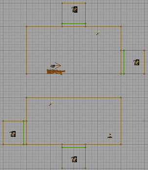

WarpZoneInfo
A Warp Zone is a zone that behaves in a very similar manner to a teleporter. The big difference between the two is that you can see through a warp zone to the other side. This enables sections of a level to be seamlessly joined together even though they are separated in space (or disjoint).
Properties
Main
- string OtherSideURL
- This property determines the destination Warp Zone. It should contain the same value as the target Warp Zones ThisTag property. Note: This can be a full URL to another site on the net or a simple string for a destination within the map.
- name ThisTag
- This property is the ID of the Warp Zone. All Warp Zones linking to this Warp Zone will have their OtherSideURL property set to the value of this property.
- bool bNoTeleFrag
- Set this to true if you want people travelling through the warp zone to telefrag each other. Since this rather spoils the effect of the Warp Zone it's best left to false.
- string Destinations[8]
- This property is the ID of the Warp Zone. All Warp Zones linking to this Warp Zone will have their OtherSideURL property set to the value of this property. When the WarpZone is triggered it will switch the warpzone view on the fly. Setting the warpzone's own tag as one of the destination warpzones will in effect turn off the warpzone too.
Hidden
- int iWarpZone (const)
- coords WarpCoords (const)
- WarpZoneInfo OtherSideActor (transient)
- object OtherSideLevel (transient)
- int numDestinations
Notes
Warp Zones need to be placed with care for a number of reasons:
- Hit scan weapons (the minigun, the sniper rifle) will not fire through a Warp Zone so avoid using them in long corridors. There's nothing worse than shooting at someone the other end of the corridor when you bullets simply vanish mid-corridor.
- They can make your level layout very confusing as you are not bound by the normal rules of space. (This is not necessary a bad thing, natch.)
- In UT2003/UT2004 avoid placing Warp Zones such that the player could see through more than one. You risk some strange hall of mirrors type effects and your framerate will plummet. This can be bent in UT99, as long as the warpzone "sees" itself, IE the warpzones are recursive.
- Warp Zones must be at least 72 units deep if you want players to be able to travel through them, but 128 units is reccomended. If you only want to be able to see "through" the warp zone and travel through it is not requires, then you can make it as shallow as you want. When pathing the zone place the final PathNode as deep into the Warp Zone as you can - this tends to prevent bots getting stuck in the Warp Zone itself.
- Do not place any semi-solids or actors within your warp zone – it should be completely bare apart from the WarpZoneInfo object itself. Strange things happen when you do from relatively benign HOM effects through to map crashes.
- Both Warp Zones should be the same shape with the same textures, otherwise the transition will not be very seamless when you walk through the warp zone.
- Warp zones will almost always cause a "stutter" or small graphics glitch when you go through the warp. This is only heavily noticable if the traveling player happens to be looking sideways while navigating the zone.
The Warp Zones are tied together by matching the OtherSideURL and the ThisTag properties of the Warp Zone. UT's DM-Fractal uses a Warp Zone in the pit that opens when the lower switches are hit.
The diagram below shows a small example level that contains four Warp Zones (or two pairs). One pair of Warp Zones link to each other horizontally, and the other pair of Warp Zones link to each other vertically, from bottom to top.

This is the front view of a level with 4 Warp Zones on it. And yes it is possible to shoot yourself in the back with the rocket launcher in the level, or at least it would be if the rocket actors spawned on firing actually did collision detection with the actor which spawned them. |
Usage
Portal Orientation
Warp zones will change the orientation of the player, but not necessarily in the way you expect. The warp zone rotates the entire coordinate system. In short: if the player enters the departure warp zone looking at the front side of the surface, they must leave the arrival warp zone with the rear side of the surface behind them. Or to put it another way: imagine the map being ripped apart, with the two zone portal surfaces being brought to coincide with each other – they should be facing the same way. Now, with portals where the player falls into the floor and then drops from the ceiling, or walks East in to the warp zone and comes out still walking East, this is a no-brainer: just add the two portals one after the other, without rotating the sheet red builder brush. In other situations, the mapper is faced with some problems in determining which way to orient the sheets:
- the surfaces are two-sided
- they're only visible if the camera is in the world volume and realtime preview is off
- you can't tell which way a surface is facing anyway
Trial and error is one option. Another is to use a texture which displays fonts. Editor.Bad is good, as it's already loaded. For a warp zone pair, you need to make sure that when you look at each portal from the main map area, one reads correctly and the other is mirrored.
Skybox
Warpzones and skyboxes don't mix, it seems. If both a warp portal and a surface displaying the skybox are visible, the engine can have problems drawing polys correctly.
The technicalities are this: if a poly P1 is visible through the warp portal Pw and overlaps a Fake Backdrop poly P2, then portions of P1 will be drawn within Pw and ALSO within P2.
Note on Warpzone Destinations
If you leave the OtherSideURL blank and only have entries in the Destinations, the warpzone will start out deactivated, ie it's just a normal closet style room you can walk in and out of as you would any normal room.
Once you trigger the warpzone however, the first destination view appears and you can then walk into and out of that view. Press the trigger again and another view replaces that one.
If you set one of the destinations to point to itself, ie. the warpzone's tag is me and one of the Destinations is set to me, then when this destination is triggered on, the warpzone is deactivated, turning it into a normal room again.
See the demo map here:
http://www.doogle.co.uk/private/warpzonechanger.zip (UT only)
Warp Zone Spanning Levels
In theory, you can specify another level's URL as the destination/OtherSideURL of the Warp Zone. I haven't had any success with this though.
Warp Zones in UT2003 and Later
Warp Zones still work in UT2003 and later engine versions, but not as well, apparently due to incompatability with some of the newer 16-bit graphics features.
Improvements
- AI interaction with WarpZones has improved, and bots can now path between them without additional help (they treat the WarpZoneInfo as a node, which forms purple (special) paths). They also seem to able to 'see' and fire at players the other side of a warpzone.
Problems
- You can no longer see beyond one or two warpzones (this can be a little tempremental at angles or when near to the zone boundary)
- The texture used for the special plane must be at least partially transparent, because it gets rendered – this means that it doesn't get used as a terminator when the engine gives up recursing (you get a nice HOM instead).
- Karma actors completely ignore warp zones. Vehicles will drive and ragdolls will fall straight into the 'overlap' area and collide with it. (Vehicles are particularly bad: while in one, if you rotate the camera, you can see inside the 'overlapped' section. The rendering of them is terrible: vehicles will be 'cut off' if they're in your zone and jutting out; or just look like a warpzone-gone-wrong from outside (there seems to be some kind of crazy perspective mismatch).)
- Weapon impact effects (scorch marks) do not cross warpzones but are simply truncated (probably applies to projectors as a whole).
- Static meshes will only render the parts of the mesh that are in your current zone if their pivot is in that zone, else they render completely.
- You are not rendered when in first person, even when you 'should' be visible (insofar as the word should has any meaning when applied to spatial anomalies). This can lead to strange effects, such as an invisible something killing all the bots. This can be avoided by avoiding situations where you would be able to see yourself through a WarpZone, but that's no fun...
- Projectile meshes lose their Rotation when passing through a WarpZone (i.e. they end up pointing exactly west and level, even though the direction of travel remains diagonal), which can look slightly weird. The effect is pretty minor, but observable with all mesh-based weapons (which, annoyingly, is all the ones which aren't beams – i.e. all the ones that work at all) if you drop down to
slowmo 0.1. The most obvious projectiles are the big ones: 'deemers and AVRiL rockets; the most subtle the smaller, spherical ones: biorifle rounds, shockrifle spheres, and ONS grenades. The translocator flies perpendicular to the XY plane anyway, so the rotation is almost impossible to notice. Spider mines at least turn the right way up, so the effect is no worse than their usual landing.
Other limitations of WarpZones
- Splash damage does not traverse across WarpZones, so you can survive a Redeemer blast that's visually only a few metres away.
- Trails from UT2Kx flack and translocators may zap through walls and back as they cross the WarpZone, following a direct route to where the other zone is located in space.
- Zone fog will only apply to the zone that the player is in, and all other zones will appear fog-free even if beyond the fog's 'end' distance.
Tips
To hide the artifacts of WarpZones (and thus break brains subtly)...
- If you can, duplicate a section of a warpzone's target the other side of the zone plane. This will help make the lighting transitions across warpzones more accurate, and means that Karma ragdolls in UT2kx will fall somewhere that looks roughly correct, rather than a little box with incorrectly textured walls.
- Use twists. While transforms on the zone plane can lead to brokenness (vertex editing to create shear, for example, leads to a nice HOM around the edge), simple ones are fine. If you rotate your warpzones, you can make an infinite length where the two distant ends can't see eachother, and thus won't cause a HOM.
- If you can't do that, and are using UT2kx, try setting up some very slight fog, with a colour that matches the most dominant one in your textures, and set bClearToFogColour to true. It'll hide the HOM. (In UT99, just use a suitable texture for your WarpZone plane.)
- Be subtle with changes in vertical angle. The player's view (and aiming) angle won't stay aligned to the floor as they travel through warpzones twisted in such a manner, so you can easily find yourself suddenly staring at the floor or the ceiling (this is also quite ugly to spectate). A ringworld would require the player to continually push their aim upward as they travelled.
- Use projectile (not trace) weapons, and provide lots of ammo to stop players falling back on the trace-based default assault rifle/Enforcer.
- Align your zones. If you're attaching two 'islands' of space via warpzones alone, line the warpzones up as best you can between the two. This helps to reduce quirks, especially the flak trails.
- Keep WarpZone planes as 'out of the way' as possible. No matter what you do, they'll still show some glitches, prevent splash damage, and really mess with the free-roaming spectator camera, and players will spawn with trace-based weapons (esp. in Instagib!). If you have a choice, put WarpZones across sections of passage where players are least likely to be fighting with direct fire – for example, corners, or drops.
- Check your bot paths: there should be links from one zone to another and back.
A tiny 1-on-1 UT2003/4 DM map by LionsPhil demonstrating some of these principles is [here].
Suitable weapons
The following weapons are not hitscan and thus can travel through WarpZones fine:
- Translocator (leaves trails, see above)
- Biorifle
- Ripper (UT) (note that this and the flak cannon are the only weapons with which you can shoot yourself in the back of the head; none of the others' projectiles collide with you (and thus cause ouchness) if you spawned them. It's probably something to do with ricochets.)
- Flak cannon (UT2kx version leaves trails, see above)
- Grenade launcher (UT2k4) (note that your grenades won't stick to you, but they'll hurt you plenty)
- AVRiL (UT2k4; targetting mode (altfire) untested – vehicles don't behave with WZs anyway)
- Rocket launcher (the UT99 grenades may or may not collide with you; this is yet to be established (mmm, practical weapons testing, by shooting yourself))
- Redeemer (yup, they can be steered through WarpZones OK, although significant orientation shifts can cause odd effects, such as gimble lock in the steering)
Unsuitable weapons
But these are, and thus don't:
- Enforcer (UT)
- Assault Rifle (UT2kx; grenades OK, but they don't detect YOU, and thus don't blow up as a result of your presence; this is arguably trivial, until it isn't)
- Spider mines (mines themselves are OK, and—curiously—the laser's target hits the right place, even if invisible, but the mines run straight at it in the global co-ordinate system, rather than through the portal (i.e. usually into a wall))
- Shock rifle (shock orbs (altfire) are OK)
- Pulse/Link gun (primary fire (non-beam) is OK)
- Minigun
- Lightning gun (UT2kx)
- Sniper rifle (including the UT2K4 reappearance)
- Ion painter (UT2kx)
- Target painter (UT2kx; bombs themselves probably *can* fall through WZs)
External Links
Discussion
Legal: So, this means the UT2004 WarpZone is broken? Or is this written pre-2k4? Also, if the 2k4 version is working, can you shoot through it? With any weapon, or are the hit-scan still incapable of firing through them? Does anyone know this, or should I spend some time checking it up? Any answers close to sane will be well-recieved.
Legal: Never mind, I found a proper explanation from Rachel below, good it's there. This Wiki info is partially incorrect compared to Rachel's info, but as I don't know just everything yet I'll leave it for later.
Tarquin: Yeah, Rachel doesn't play wiki 
Enos: They work in 2k4, just not nearly as well as they did in UT99. I had a map in UT99 that used 6 corridors in a cross-hatch with warpzones on each end. It was a madhouse of a map, i attempted to recreate it for 2k4, but the view goes HOM very very fast (About 2 repetitions in) compared to UT99 that rended probably 6 or 7 repetitions deep.
RenegadeWeapon: The portals for the WarpZones don't necessarily have to be the same size. It is possible to create a sort of surveillance camera; by using one warpzone as the camera and the other as a screen. An ICH should ideally be placed in front of one warpzone to prevent players from jumping/firing through the setup, or you risk coming out through the walls adjacent to your destination and weird stuff like that.
Foxpaw: Hmm, I'd be interested to see if the UseStencil thing in the quote from Steve Polge is true. I tried making warp zones in UT2003 to try to answer some of the questions people were having but they did not seem to draw, regardless of the lack of a skybox. The UseStencil thing may be key, however.
LionsPhil: Comment moved up to content.
juiblex: Comment moved up to content.
Draconx: Warp Zones can be put to interesting use if you angle the zoneportal, it can allow for some interesting map concepts, such as the centrifuge of a space station where players run along the outside edge, or playing on the outside of a sphere. If only hitscan weapons fired through them...
Foxpaw: Err, juiblex, you said that the old link didn't work, then posted an identical link as the "new" one. 
It might be possible to modify hitscan weapons to work through zone portals. Since Trace can return the material that it hits, you could check the material and if it is a certain predefined "warpzone" material that you use for all of the warpzones, you could use this as an indication that it should seek out the warpzoneinfo, find it's counterpart, and maybe you could go from there. That sounds like it would work. You would, unfortunately, have to replace all of the weapons with hitscan firemodes with "fixed" ones.
I like the sound of fighting on the inside of a centrifuge-like object. Seeing people off in the distance that appeared to be fighting on the walls or fighting "upside down" "above" you would be very neat. (Though granted I think it would be coolest with something spinning fast in the center, so you wouldn't really be able to see the other side.)
Draconx: Yeah its cool, but remember that you can only see a small depth of warpzones, thus if you make it so that you can see the side directly opposite, there must only be x warpzones between you and that other side (either direction - i believe you can do a big octagon)
LionsPhil: Comment moved up to content. [Vehicles don't work], so ONS maps on minature planets are out, alas.
Foxpaw: Karma physics are integrated kind of iffy with the rest of the engine. Karma handles its own movement - this is probrably why Karma objects won't "move" through warpzones. I'd test it with other Karma objects, and a non-Karma vehicle (if there is any, the space fighters might be) to see what results that caused.
Kamek: I can attest to the fact that at least Karma ragdolls don't go through WarpZones. This is probably a good thing, otherwise ragdolls would fall forever on my Abstract map and the place would become littered quickly 
McNutcase: In UT99 at least, it's important to remember that your Zone Portals not only have polarity, they have a definite direction as well. It is perfectly possible to join a ceiling to a floor in a section of a corridor using this, allowing you to make fun corridors where gravity apparently reverses for a long section in the middle. This effect is also of great use in the faking of four-dimensional folding when building a true hypercube, as it allows for the numerous co-ordinate flips that end up with a player's brain dribbling from his ears.
When building ringworlds, I know from experience that seven segments is the practical limit, and seven segments (assuming a central spine) is actually enough to run into graphical oddities, invisible brushes turning visible, and the like. Best to stick to six, although this has some naturally deleritous effects on the believability of your ringworlds. Frankly, for ringworlds, the Unreal engine just isn't strong enough. You'd be better off with the Serious engine for that sort of jiggery-pokery.
As for Karma ragdolls, even if the player that previously inhabited them doesn't respawn, they swiftly fall victim to the Great Garbage Collector and de-rez into the weird green effect.
LionsPhil: Comment moved up to content.
Tarquin: Just for reference.... which ones are the [hitscan weapon]?s?
MythOpus: I believe it's anything that uses real 'traces'. So, weapons like the assault rifle and I think even the shock rifle. Everything based off of the InstantHit weapon fire type?
BobFungus: I wonder if you could embed a mutator in a map with warpzones that changes hitscan weapons so that they don't hit instantly and instead have a ridiculous projectile velocity. It seems possible to me, but a very high velocity might end up causing problems. I'm no coder, but if anyone has the time could you get back to me on this?
McNutcase: comment has been upgraded to content
LionsPhil: Is the description of bNoTeleFrag correct? It sounds negated, but it's not a particularly easy thing to test. In other news, I've shifted some of the discussion into being content and thus deleted my own redundant comments; feel free to re-jig this as people see fit. The weapon suitability lists are almost complete for standard weapons, apart from the impact hammer/shield gun, because they're "touch" weapons and I'm not sure how to test them. I *expect* that players in distinct zones won't collide, but that means that there's distance between them *anyway* (i.e. the WZ won't be any more noticable than an air gap to such weapons).
LionsPhil: Vehicle weapons haven't been sorted into suitable/unsuitable, because vehicles themselves dislike WZs. That said, I'd love to see if skymines can combo through a WZ – at a guess, the spheres can pass, but the beam can't, so can it chain through?
LionsPhil: Does it deserve mention that warpzones are, well, zones, and the very nature of attaching disconnected bits of space will give you zoning-style culling?
Lucy: This's be the first time I've gotten actively involved in the wiki here. I've been trying to make a warp portal and was pulling my hair out for hours trying to make it work. Figured out the problem. If any area behind the warp portal's surface is in the same zone as the warp portal (think about the surface of the Monolith from 2001 Space Odyssey) then the surface will not render what is beyond the warp portal unless UseStencil is set to True. The UseStencil switch DOES fix the problem. Is there some way to detect in a script if the UseStencil switch is toggled? We could maybe do a workaround to make a scripted texture that is opaque or transparent depending on the stencil switch.
Dan: Whenever I try to make a warpzone, I can see the portal in the game with whatever texture shows up in the editor. By the way, where is UseStencil? I can't find it.
DemonThing: UseStencil is an ini option, in UT2003.ini/UT2004.ini.
LionsPhil: Make sure you're using a transparent texture; see AngelMapper's guide. Also, someone added "RX's Can be flown and ejected through zone portals"...RXs? I think the list should be kept to standard weapons.